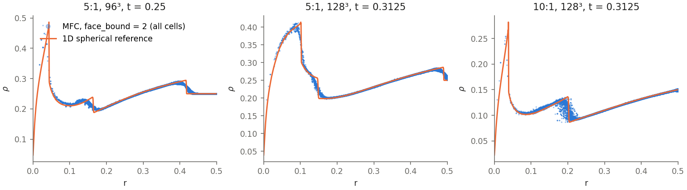
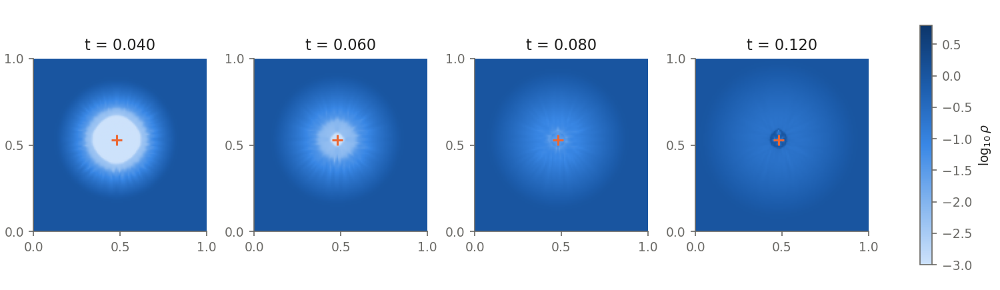

|
MFC
Exascale flow solver
|
|
MFC
Exascale flow solver
|
Status: validated (runs complete, density and pressure positive, agreement with a 1D spherical reference, order of accuracy unchanged on smooth flow). Code: master at bb9cfe5e1 plus face_bound = 2. Examples: examples/2D_vacuum_collapse, examples/3D_amr_blast (run without AMR). Issues: #2469, #2344. Last run: 2026-11-26.
When a converging shock collapses onto a near-vacuum region, as at the centre of a spherical blast or in an implosion or a cavitation collapse, unlimited WENO reconstruction can produce face states with negative pressure. The sound speed is then NaN and the run stops. The cell averages are still positive at that point; only the reconstructed face states have left the admissible set. face_bound = 2 scales each cell's face states toward the cell state, by one factor per cell and direction and only as far as the bounds require (Zhang and Shu [108]). Where every bound already holds it changes nothing.
A numpy replica of the scheme reproduces both issues step for step. It uses WENO5-JS (or mapped WENO5) on primitive variables, HLLC with direct wave speeds, SSP-RK3 and \(\Delta t = 0.1\,\Delta x\). It runs one octant with symmetry planes through the blast centre.
| Case | Replica | MFC, face_bound = 0 |
|---|---|---|
| 5:1 blast, 96³, WENO5 | negative face pressure at step 205 | NaN at step 206 (cell next to the centre) |
| 5:1 blast, 128³, WENO5 | negative face pressure at step 275 | NaN at step 276 (step 280 in #2469) |
| 10:1 blast, 64³, mapped WENO5 | negative face pressure at step 180 | NaN at step 181, cell (31, 31, 28) as in #2344 |
| 10:1 blast, 128³, WENO5 | negative face pressure at t = 0.284 | NaN by t = 0.31 (#2344) |
| centre \(\rho\), \(p\) at t = 0.1875 (5:1) | 0.0187, 0.0038 (96³) | 0.018, 0.0037 (128³, #2469) |
The 1D spherical reference below gives 0.0163 and 0.0031 at t = 0.1875: the run is accurate up to the collapse. In the replica every cell average stays positive through every RK stage, and the failure is 3 to 6 face states next to the centre. Scaling those face states toward their cell states takes all four cases through the collapse, with 6 to 30 cells limited in a whole run.
For each cell and direction, face_bound = 2 finds the largest \(\theta \in [0, 1]\) such that both face states \(\bar q + \theta(q_f - \bar q)\) (primitive variables) satisfy the following:
Volume fractions get their own \(\theta\), which keeps them in \([0, 1]\); in the 6-equation model the internal energies are scaled with the rest of the state. The bound needs stiffened-gas fluids, so that \(\Gamma\), \(\Pi_\infty\) and \(q_v\) are linear in the volume fractions; case_validator.py rejects state-dependent equations of state, chemistry (use face_bound = 1), bubbles, MHD, elasticity, relativity and IGR.
Same scheme, CFL on the cell states, \(\theta\) as above (labelled "bound"). "Face only" is condition 1 alone, as face_bound = 1 does it. "Fails" means a negative face pressure or density.
| Problem | Unlimited | Face only | Bound |
|---|---|---|---|
| Leblanc shock tube, CFL 0.3 to 0.7 | fails at step 2 or 3 | completes | completes |
| Planar Sedov, ambient \(p = 10^{-12}\), CFL 0.3 to 0.7 | fails at step 2 or 3 | completes | completes |
| 123 problem, \(u = \pm 2\), CFL 0.7 | fails at step 4 | completes | completes |
| 123 problem, \(u = \pm 3\), CFL 0.6 | fails at step 4 | completes | completes |
| 123 problem, \(u = \pm 3\), CFL 0.7 | fails | negative cell average at step 4 | negative cell average at step 4 |
| \(\rho = 1 + 0.99999 \sin 2\pi x\), \(u = p = 1\), 20 cells | fails at step 1 | negative cell average at step 39 | completes |
The last row of the 123 problem is the CFL condition: past it no face bound can keep the cell average positive. On the smooth near-vacuum sine, the bound is inactive at 80, 160 and 320 cells, and the L1 density errors after t = 0.5 are bit-identical to the unlimited scheme: 6.98e-7, 2.18e-8 and 6.82e-10 (order 5.00, 5.00). A cap factor of 25 instead of 1000 acts at 40 to 160 cells and doubles the error at 80, so 1000 is used. The interior-point condition (3) did not act in any of these tests; the face bounds were always the binding ones.
face_bound = 2, CPU: GNU 13.3 with OpenMPI 4.1.6 on 8 ranks. GPU: NVIDIA A100, NVHPC 25.11 OpenACC, on 1 rank.
| Case | face_bound = 0 | face_bound = 2 |
|---|---|---|
| 5:1 blast, 96³, 240 steps (t = 0.25) | NaN at step 206 | completes; A100 vs CPU 2.5e-13 |
| 5:1 blast, 128³, 400 steps (t = 0.3125) | NaN at step 276 | completes |
| 10:1 blast, 64³, mapped WENO5, 300 steps | NaN at step 181 | completes |
| 10:1 blast, 128³, 400 steps | NaN by t = 0.31 (#2344) | completes |
| examples/3D_amr_blast, 64³ base, one subcycled level, 200 steps | NaN at step 140 | completes |
| 2D collapse, 128², 1 fluid, 5-equation | NaN at step 271 | completes; A100 vs CPU 1.0e-12 |
| 2D collapse, 2 fluids, 5-equation | NaN at step 232 | completes; A100 vs CPU 1.9e-12 |
| 2D collapse, 2 fluids, 6-equation | NaN at step 246 | completes; A100 vs CPU 1.6e-12 |
GPU-CPU differences are the max-norm difference of the conservative state over its max-norm at the last save.

Density of every cell against radius, after the collapse, with face_bound = 2, against a 1D spherical solution of the same scheme on 4000 cells (a finite-volume scheme in r with \(r^2\) face areas, reflection at r = 0). The outgoing shock, the contact and the reflected shock agree. The spread at a given r is the 3D grid's departure from spherical symmetry.

2D collapse, one fluid, 128², face_bound = 2: \(\log_{10}\rho\) before, at and after the collapse onto the disc centre (+). check_collapse.py passes for all three models. Minimum density and pressure stay positive at every save, and total mass and energy are unchanged to 4e-13 until the outer rarefaction reaches the boundary.
The advection convergence cases (./mfc.sh test --only Convergence) with --face-bound 2. Fitted order, and the L2 error on the finest grid (Phoenix, GNU 12.3, double):
| Case | WENO5 | WENO5, face_bound = 2 |
|---|---|---|
| 1D, N = 32, 64, 128 | 5.00, 3.298884e-11 | 5.00, 3.298884e-11 |
| 2D, N = 32, 64, 96 | 5.00, 3.714029e-10 | 5.00, 3.714029e-10 |
| 3D, N = 32, 64 | 5.00, 6.351377e-09 | 5.00, 6.351377e-09 |
The errors agree to all printed digits: on these smooth fields every bound already holds, so the limiter does not act.